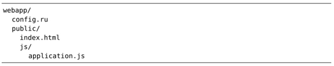
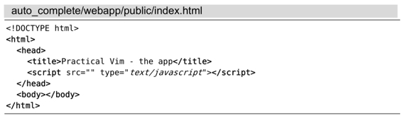
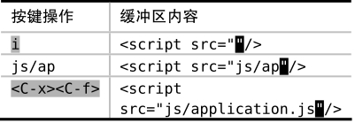

）进行触发。
）进行触发。 技巧116自动补全文件名
当我们在命令行上工作时，可以用<Tab>来自动补全路径中的目录和文件名。借助于文件名自动补全的方式，我们也可以在Vim的编辑窗口中完成相同的操作。文件名自动补全功能可以通过<C-x><C-f>命令（参见 :h compl-filename）进行触发。
Vim总是维护着一个当前工作目录，这一做法与shell类似。在任何给定的时间点，我们都可以通过:pwd命令（print working directory）获取到该信息，还可以通过:cd {path}命令（change directory）随时切换工作目录。另外，Vim的文件名自动补全功能只相对于工作目录的路径进行扩展，而不是相对于当前编辑文件的路径，理解这一点很重要。
假设我们正在开发一个由下列文件组成的小型web 应用：

此时，正在编辑index.html这个文件：

我们的目的，是想把src=""的属性填充为application.js文件的路径。但如果我们想通过文件名自动补全的方式实现这一点的话，会遇到点麻烦：
➾:pwd
《 webapp
倘若我们此刻就调用文件名自动补全的话，它补全的内容将是相对于webapp的路径，即src="public/js/application.js"。但实际上，我们想让其引用的是src="js/application.js"。因此，如果我们想用文件名自动补全的话，必须先切换到public目录：
➾:cd public
现在我们就可以调用文件名自动补全了，它补全的内容将是相对于webapp/public的路径：

插入了文件路径后，我们可以重新回到原来的工作目录：
➾:cd -
与shell的用法类似，cd - 将切换到之前的工作目录（参见:h :cd-）。
在描述文件名自动补全功能的文档中指出“（目前）这里不使用‘path’选项”。也许在未来的Vim版本中，我们不用切换目录就可以利用该功能完成那个假想的Web应用任务了。